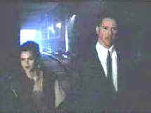

|
Johnny Mnemonic/B/B+ |
| Columbia/1995/103m/ANA
1.85,FS 1.33 |
|
This much maligned Scifi flick seems
true to its own material. The arc of its story follows a straight line through the vision of first
time director, artist, Robert Longo. Scifi writer William Gibson wrote the screenplay based on his
own short story. The action is non-stop, explosive and the false steps interesting.
 |
|
Reeves and Meyer in the dark.
©Columbia Tristar
|
Keanu Reeves is icy as the courier
with a computer implant and Dina Meyer (Starship Troopers) is a hoot as his partner in
grime.
The very dark palette of Johnny Mnemonic needs all the video help it can
get and DVD provides the answer with a crisp detailed transfer. Explosion transitions are bright
and stable against the black backgrounds of this Scifi techno landscape. The Dolby 5:1 sound is
outstanding with solid bass extension and enveloping detail.
|
|
|

The Feature Archive
has articles ranging from Akira
Kurosawa to Blonde Bimbos.

Click on the image above for a "dream interview" with director John Ford.

Movie Rage: Death in the Aisles
Everyone knows what it feels like to get angry at the
movies these days. Here's a humorous but not so delightful view of big screen misery.
Body Parts

Hollywood's long fascination with parts of the body is explored
piece by piece.
|